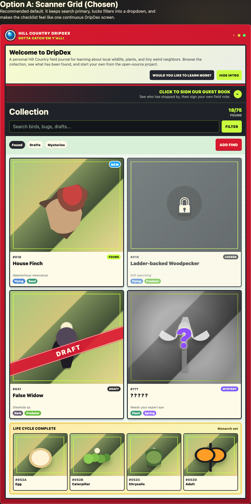

Turn sightings into cards
Keep a public-safe collection of creatures, plants, fungi, and seasonal finds that actually belong to your place.
Your own field collection for the living world nearby: porch-light moths, creekside frogs, schoolyard birds, backyard mushrooms, and every small surprise worth remembering.

DripDex is for the bug on the window screen, the feather in the grass, the lizard that keeps returning to the same warm stone, and the kid who wants to know whether anyone else has seen it too.
It gives those ordinary sightings a place to land: a local card, a note, a photo, a mystery to resolve, and eventually a record of the neighborhood nature a family or class has actually met.
What it helps you do
The shape is familiar: cards, favorites, mysteries, and a growing collection. The subject is real: living things outside your door.
Keep a public-safe collection of creatures, plants, fungi, and seasonal finds that actually belong to your place.
Not every photo needs an instant answer. DripDex keeps uncertain finds in review so adults and kids can compare, ask, and learn.
Over time, the collection becomes a gentle record of seasons, favorite places, repeat visitors, and discoveries worth retelling.

Kids outside
DripDex is meant to make outdoor curiosity easier to say yes to. A parent, teacher, or club leader can turn a quick sighting into a small investigation without making it feel like homework.
The goal is not to chase points. It is to make room for close looking: What color was the wing? Was it near water? Did it come back after dark? What else lives here with us?
Trust and care
Nature journals can carry sensitive context: home places, school routines, exact coordinates, and private photos. DripDex treats that as part of the product, not an afterthought.
Public pages are built around reviewed, EXIF-stripped images and broad location labels.
Exact locations, private originals, drafts, and owner notes belong behind owner-only boundaries.
Guestbook notes and AI identification suggestions stay in owner review before they change public content.
Build your own
DripDex is open source so a family, teacher, or local club can make a fixture-backed preview of their own without waiting for a hosted service.
The build guide carries the practical details: free GitHub and Vercel accounts, a local env file for secrets, an agent-friendly setup path, and clear reminders about what is safe to publish.

Preview surfaces
These screenshots use fixture-backed sample content from the repository. They show product direction, not final scientific or licensing claims.


Open the preview, browse the cards, and imagine what your own porch, trail, classroom garden, or neighborhood creek would look like as a living collection.